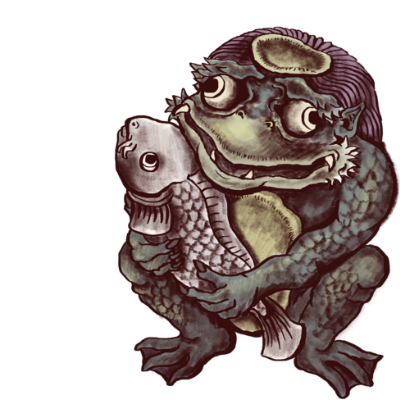
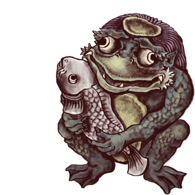

Black
Samurai
Samurai were the hereditary military nobility and officer caste of medieval and early-modern
Japan from the 12th century to their abolition in the 1870s.
They were the well-paid retainers of the daimyo. They had high prestige and special privileges such as
wearing
two swords.